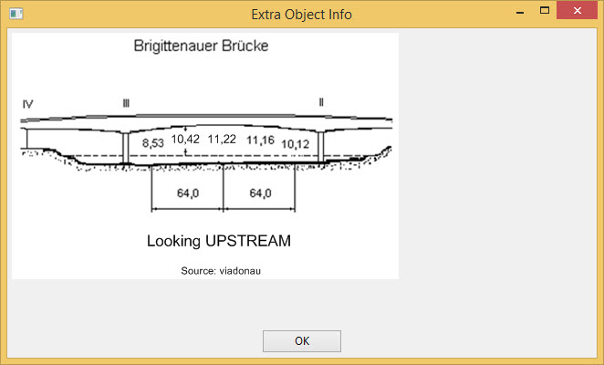

Cartes
Introduction
Les symboles des cartes et autres informations sont visibles ici : Ici
Les cartes ENC (IENC) pour les pays d’Europe sont accessibles ici : Ici
OpenCPN peut télécharger et mettre à jour les IENC aisément en utilisant le complément Chart downloader . Ce complément est installé avec la partie principale d’OpenCPN.
Télécharger et installer les cartes "Inland ECDIS"
Options 
Cartes Sélectionnez l’onglet Chart Downloader
Catalogue : Ajouter

Sélectionnez ChartCatalogs et appuyez sur OK
Les cartes életronique de navigation ENC sont des cartes où les objets et tous les détails nécessaires pour les EDCIS des eaux intérieures peuvent être sélectionnés par l’utilisateur. Ces cartes sont utilisées dans le mode ECDIS Inland.
Sélectionnez The Netherlands Inland ENC Charts
OK
Une entrée pour les cartes des Pays-Bas est visible dans le catalogue
Mettre à jour
Carte choisies : Téléchargez
Appliquez
Dossier : Ajoutez
Sélectionner un dossier
Appliquez OK
Adaptation de l’affichage des cartes
Déplacez la zone de carte jusqu’à ce que vous voyiez les Pays-Bas

Sur la droite, certaines cellules de cartes ont disparu. Elles deviendront visibles si la cellule est déplacée vers le centre de l’écran, au fur et à mesure que la cellule est chargée. Pour éviter ce délai:
Options Cartes
Cartes ENC : Les analyser
Cela peut prendre un certain temps pour charger toutes les cellules.
Appliquez OK
Décochez Bordure dans Cartes : Affichage


La Barre de cartes apparait en bas de la zone de carte. Elle montre l’ensemble des cartes disponibles pour cette zone de carte. En plaçant le curseur de la souris sur un des rectangles de cette barre de cartes, la carte est mise en valeur sur l’écran et les données spécifiques de cette cartes sont affichées, comme sa date de mise à jour.
Comment mettre à jour vos cartes
|
Mises à jour des cartes
Il est important de mettre à jour régulièrement les cartes disponibles. https://www.vaarweginformatie.nl/frp/main/ Ce site web multilangue connait les liens de téléchargement de toutes les cartes. |
Options Cartes
Chart Downloader
Selectionnez un catalogue …
Mettre à jour
Cartes : Télécharger…
Download selected charts
La mise à jour a échouée pour Zeeland Compleet Week 18-2022. Dans ce cas, il est nécessaire d’utiliser le lien : https://www.vaarweginformatie.nl/frp/main
Ici vous voyez Zeeland Compleet Week 19-2022. Téléchargez et extraiyez les fichiersà partir du fichier ZIP dans le dossier des ENC. Alors, ajoutez ce nouveau dossier pour les cartes :
Cartes ENC : Les analyser
Les fichiers de la semaine 19 remplaceront ceux de la semaine 18.
Ajoutez plus de cartes
C’est simple pour ajouter des cartes allemandes.
Options Cartes
Catalogue : Choisir
Catalogue : Ajouter
Recherchez Germany Inland ENC Charts
OK
Mettre à jour
Cartes : Télécharger …
Download selected charts
Ceci peut prendre un certain temps.
Deux cartes 'périmées' ont été trouvées.
Download selected charts
Options Cartes
Dossiers
Pour éviter l’attente dans l’affichage de la mosaïque.
Cartes ENC : Les analyser
Appliquez OK
Nous avons maintenant installé les cartes Allemandes et Hollandaises pour OpenCPN.
Cartes : Affichage
Bordure montrera les cellules de cartes disponiles.

Zoomer pour le détail de la carte.
Information complémentaire des cellules de cartes
En plus de la vue standard de la carte, des détails supplémentaires sont fournis.
Il s’agit d’une carte autrichienne dans une zone proche de Vienne.
Clic-droit

Liste des objets :…
L’attribut PICREP contient un lien vers un fichier image pour le pont.

Il est intéressant de noter que le dégagement de 8,5 m est indiqué sur la carte près de l’axe du chenal. D’après l’image, 11,22 m sont disponibles au centre du pont.

Clic-droit
Cet objet est un Notice mark.
L’attribut catnmk indique le maximum de bateau qui peuvent accoster simultanément.
L’attribut INFORM donne le nombre maximum de navires autorisés à accoster 3, mais pas de cargos.
Beaucoup plus de détails pour l’encodage de l’IENC :